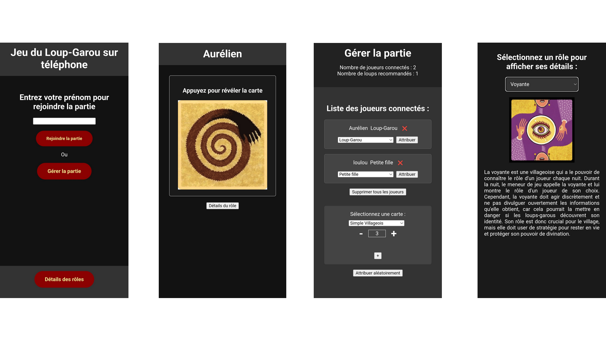

Jeu du Loup-Garou en ligne - Jouer partout, sans cartes (Projet personnel)
- Compétences déployées : Développement web, HTML, CSS, JavaScript, PHP, Bases de données, SQL.
- Lien : Site web produit
Développement d’un site web permettant de jouer au jeu du Loup-Garou en ligne, sans cartes, optimisé pour téléphone. Le site permet de jouer à plusieurs, en créant une partie et en invitant des amis à rejoindre la partie. Le maître du jeu peut gérer les participants et leurs rôles. L’idée de créer ce site m’est venue lors d'une soirée entre amis, où nous n’avions pas de cartes pour jouer. J’ai donc décidé de créer un site web permettant de jouer au jeu n’importe où, sans cartes, sur téléphone ou ordinateur.
C’est mon premier projet web dynamique, connecté à une base de données et utilisant du javascript. Je l’ai réalisé seul, avant de commencer les cours abordant ces notions. J’ai utilisé des tutoriels en ligne ainsi que l’IA pour résoudre les problèmes rencontrés.
Fonctionnalités Clés :
Rejoindre la partie : Les joueurs peuvent rejoindre la partie en entrant leur nom. Ils ont ensuite accès à leur rôle, qu'ils peuvent masquer, ainsi que l’explication de ce rôle.
Gestion de la partie : Le maître du jeu peut gérer les joueurs, en leur attribuant un rôle, en les supprimant de la partie, ou en attribuant aléatoirement des rôles sélectionnés.
Consulter le détail des rôles : Les joueurs peuvent simplement consulter le détail de tous les rôles du Loup-Garou, sans avoir à rejoindre une partie.
